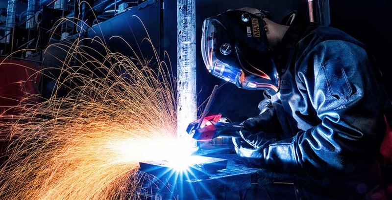

Welding is a fabrication process whereby two or more parts are fused together by means of heat, pressure or both forming a join as the parts cool. Welding is usually used on metals and thermoplastics but can also be used on wood. The completed welded joint may be referred to as a weldment. Some materials require the use of specific processes and techniques. A number are considered 'unweldable,' a term not usually found in dictionaries but useful and descriptive in engineering. The parts that are joined are known as a parent material. The material added to help form the join is called filler or consumable. The form of these materials may see them referred to as parent plate or pipe, filler wire, consumable electrode, etc.
